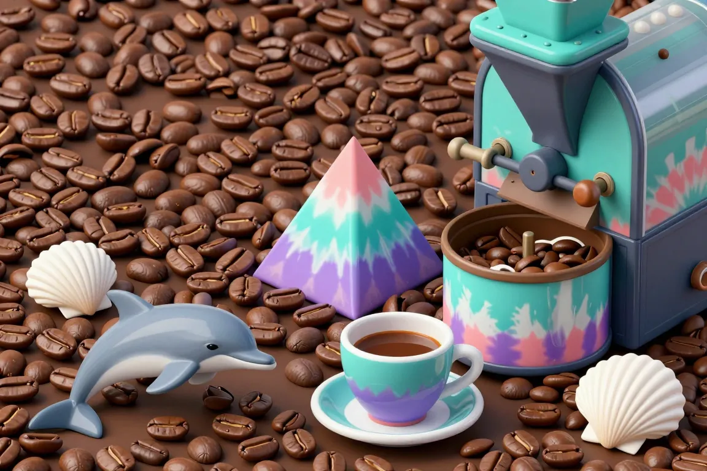

Turquoise and aqua water, dolphins, shells, floating 3D shapes and tie-dye, with 1990s web graphics. It started as a joke tweet in 2011 and grew into an ocean theme in music and fashion.

Core thesis
Put the early web underwater: its 3D shapes, clip art and gradients float on a sea of turquoise.
Design principles
Set the ground as a vertical gradient from aqua (#7FFFD4) at the top to deep sea blue (#0B3D91) at the bottom.
Float 3 to 6 glossy shapes (pyramids, spheres, rings) at different sizes and let them drift over the layout.
Place one marine motif at 30% to 50% of the frame: a dolphin, a shell or a wave.
Set the display text with 2 colour stops from #00F5D4 to #9B5DE5 and a 2px dark edge.
Overlay a tie-dye or wave pattern at 15% opacity on one panel.
Add a pixel sparkle of 8px at 4 or more points of the frame.
Keep the text panels on a deep sea ground (#0B3D91) with text at 7:1 contrast.